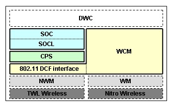

TWL-SDK Wi-Fi ライブラリ 3.3 正式版
"Confidential"
[注意！] このドキュメントの内容は、秘密情報であるため、厳重な取扱い、管理を行なってください。
(c) 2006 Nintendo Co.,Ltd. All rights reserved.
Microsoft Internet Explorer 6.0/Mozilla Firefox 3 推奨
TWL-SDK Wi-Fi ライブラリ 単体では動作しませんので、必ず TWL-SDK を事前にインストールしてください。
また、本体に保存されたネットワーク設定を参照して、無線 AP 接続するための自動接続機能は TWL-DWC という別のライブラリパッケージに含まれます。
インターネットに接続するアプリケーションは必ず TWL-DWC の接続機能を利用する必要がありますので、ご注意ください。
TWL-SDK Wi-Fi ライブラリを使うことで、NITRO および TWL のワイヤレス通信（インフラストラクチャーモード）を利用して、
インターネットへアクセスを行なうことができます。
TWL-SDK Wi-Fi ライブラリには以下の制限があります。
TWLWIFI_ROOT 環境変数に、TwlWiFi へのパスを設定して下さい。
TWL-SDK Wi-Fi ライブラリは、内部では以下のような層構造で構成されています。

TWL-SDK Wi-Fi ライブラリは現在、以下の接頭辞を予約しています。そのためアプリケーション プログラムでは、以下の名前ではじまる関数や変数を使用しないでください。
| WCM | ワイヤレス接続ライブラリ用プレフィックス |
| CPS | TCP/IP プロトコルスタック用プレフィックス |
| SOC SOCL |
ソケットライブラリ用プレフィックス |
| NHTTP | HTTPライブラリ用プレフィックス |
| NSSL | SSLライブラリ用プレフィックス |
プログラムのソースコードには、以下のヘッダファイルをインクルードして下さい。
#include <twlWiFi.h>
so2soc.h 及び iw2wcm.h がインクルードされますが、
これらのヘッダは TWL-INET に存在するライブラリの API 定義を TWL-SDK Wi-Fi ライブラリ用に定義しなおすラッパーです。
このラッパーにより、TWL-INET を使って開発を進めていた場合でも、容易にライブラリだけを差し替えることが可能です。
include $(TWLWIFI_ROOT)/build/buildtools/commondefs
include $(TWLWIFI_ROOT)/build/buildtools/modulerules
$(TWLWIFI_ROOT)/build/demos/netconnect/src/sitedefs.c